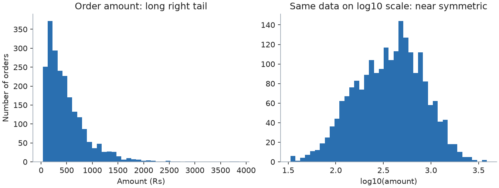

Someone hands you a file and says, "Tell me what is in here." You do not yet know what the columns mean, which values are errors, or what questions are worth asking. Exploratory Data Analysis (EDA) is the habit of looking at the data carefully, in a fixed order, before you trust it or model it. In this chapter you will generate an online-shop dataset with known dirt in it (duplicates, a unit mistake, missing values, impossible quantities), then explore it step by step with real code and real output, exactly as you would on the job. By the end you will have a repeatable EDA routine and a list of insights written the way a senior analyst writes them.
We use the same shop as Chapter 1. Because we built the data ourselves, we know the truth behind it. That lets us catch the traps that real data hides: at the end you will see an "insight" that turns out to be a false alarm.
ydata-profiling, sweetviz, missingno, pandera, great_expectations and statsmodels were not installed here, so they are only described, not run.Questions to answer first (write them in your notebook)
| Question | Our dataset |
|---|---|
| Where does the data come from? | A simulated online shop (we generate it) |
| What is one row? (the grain) | One order in orders; one customer in customers |
| What period does it cover? | Customers who signed up between 1 January and end of June 2025 |
| What are the columns? | order_id, customer_id, order_date, category, qty, amount, status |
| Which column is the key? | order_id (should be unique) |
| What decision will it support? | Which categories and channels deserve attention, and is data quality good enough to report |
The generator. Save this as gen.py. It builds two tables and then injects dirt: 60 missing amounts, 15 impossible quantities (−1), 8 amounts multiplied by 100 (as if entered in paise instead of rupees), 12 duplicate rows, and some upper-case category names.
import numpy as np, pandas as pd
def make_orders(seed=7, n_customers=1500):
rng = np.random.default_rng(seed)
cust = pd.DataFrame({
"customer_id": [f"C{i:04d}" for i in range(n_customers)],
"signup_date": pd.Timestamp("2025-01-01") + pd.to_timedelta(rng.integers(0, 180, n_customers), unit="D"),
"channel": rng.choice(["organic", "ads", "referral", "email"], n_customers, p=[.4, .3, .2, .1]),
"city": rng.choice(["Pune", "Mumbai", "Delhi", "Bengaluru", "Chennai"], n_customers, p=[.15, .25, .25, .25, .10]),
})
rows = []
oid = 1000
for r in cust.itertuples():
k = rng.poisson(1.6 if r.channel != "ads" else 1.1)
for _ in range(k):
od = r.signup_date + pd.Timedelta(days=int(rng.exponential(30)))
if od > pd.Timestamp("2025-12-31"): continue
cat = rng.choice(["electronics", "fashion", "grocery", "home"], p=[.2, .35, .3, .15])
base = {"electronics": 6.8, "fashion": 6.0, "grocery": 5.0, "home": 6.3}[cat]
amount = round(float(rng.lognormal(base, 0.5)), 2)
qty = int(rng.integers(1, 5))
status = rng.choice(["delivered", "returned", "cancelled"], p=[.86, .08, .06])
rows.append((oid, r.customer_id, od, cat, qty, amount, status)); oid += 1
o = pd.DataFrame(rows, columns=["order_id", "customer_id", "order_date", "category", "qty", "amount", "status"])
idx = rng.choice(o.index, 60, replace=False); o.loc[idx, "amount"] = np.nan
idx = rng.choice(o.index, 15, replace=False); o.loc[idx, "qty"] = -1
idx = rng.choice(o.index, 8, replace=False); o.loc[idx, "amount"] *= 100
o = pd.concat([o, o.sample(12, random_state=1)], ignore_index=True)
o["category"] = o["category"].where(rng.random(len(o)) > .05, o["category"].str.upper())
return cust, o.sample(frac=1, random_state=3).reset_index(drop=True)(A few terms: a seed fixes the random numbers. lognormal makes right-skewed positive values, like order amounts. poisson(k) gives a random count with average k, here the number of orders per customer.)
Step 1: shape and types
import pandas as pd, numpy as np
from gen import make_orders
cust, o = make_orders()
print(o.shape, cust.shape)
print(o.dtypes)Predict: how many rows are in orders?
(2244, 7) (1500, 4)
order_id int64
order_date datetime64[us]
...(customer_id, category, status are str; qty is int64; amount is float64.) There are 2,244 order rows and 1,500 customers. The types look right, so no conversion is needed. qty is an integer, which means it has no missing values yet. That will change after cleaning.
The picture
customers (1500 rows) 1 ──── * orders (2244 rows)
customer_id, signup_date, order_id, customer_id, order_date,
channel, city category, qty, amount, statusConnection to the real job. In the first meeting about a dataset, ask for the grain and the date range. Writing these down in a data dictionary (Chapter 14) prevents a lot of rework.
Applications
orders had one row per order item, then counting rows would count items, not orders, and "average order value" would be wrong.Check yourself
orders? Answer: One order per row.The scan
print(o.isna().sum())
print("exact duplicate rows:", o.duplicated().sum())
print("negative or zero qty:", (o.qty <= 0).sum())
print(o.category.value_counts())order_id 0
customer_id 0
order_date 0
category 0
qty 0
amount 61
status 0
dtype: int64
exact duplicate rows: 12
negative or zero qty: 15
category
fashion 735
grocery 661
electronics 437
home 310
GROCERY 31
FASHION 31
ELECTRONICS 21
HOME 18
Name: count, dtype: int64groupby would report eight categories.Step 2: clean, with a log of every decision
o = o.drop_duplicates()
o["category"] = o["category"].str.lower()
o.loc[o.qty <= 0, "qty"] = np.nan
cat_median = o.groupby("category")["amount"].transform("median")
o["ratio"] = o["amount"] / cat_median
print(o.loc[o.ratio >= 15, ["order_id", "category", "amount", "ratio"]].sort_values("ratio").round(1))
o.loc[o.ratio >= 15, "amount"] /= 100
o = o.drop(columns="ratio")
print(len(o), o.amount.isna().sum(), o.qty.isna().sum()) order_id category amount ratio
2226 2633 grocery 3566.0 23.4
944 2072 fashion 21933.0 53.0
752 1675 home 47982.0 92.3
345 3043 grocery 15105.0 99.0
595 2282 electronics 111473.0 131.6
892 1796 home 89659.0 172.5
659 1870 grocery 30409.0 199.4
2232 60 15Why this method? A simple fixed threshold ("amount above 20,000 is an error") would be wrong. A grocery order of 3,566 is also impossible (grocery's median is about 152), but a threshold of 20,000 would miss it. Instead we compare each amount with the median of its own category. Anything at least 15 times its category median is flagged. We found 7 rows (we injected 8; we checked that one of the 8 landed on a row whose amount was already missing, so there is nothing left to see there).
Worked example 7.2.1 Check one repair by hand.
Decisions to write in your log
| Problem | Count | Decision |
|---|---|---|
| Duplicate rows | 12 | Dropped (identical in all columns) |
| Category case | 8 spellings | Lower-cased |
| Quantity of −1 | 15 | Set to missing, not guessed |
| Amount 23 to 199 times its category median | 7 | Divided by 100 (assumed paise), flagged for the data owner |
| Missing amount | 60 | Left missing for now (see 7.3) |
The picture
amount / category median
1x ........ typical orders (cluster near 1)
4-7x ...... large but plausible (kept)
23x-200x .. data errors (fixed or flagged)Connection to the real job. The log above is what you attach to your analysis ("I made these 5 cleaning decisions"). A reviewer can disagree with a decision only if you wrote it down. In SQL the same scan is a few COUNT queries (the SQL document covers data quality checks).
Applications
pandera, great_expectations, dbt tests).Check yourself
Three mechanisms (learn the names, interviewers ask)
| Name | Meaning | Example | Safe to drop rows? |
|---|---|---|---|
| MCAR: Missing Completely At Random | Missingness has nothing to do with any data | A sensor drops 2% of readings at random | Yes, with a small loss of data |
| MAR: Missing At Random | Missingness depends on other observed columns | Younger customers skip the income field more often | Not blindly; use the other columns to fill or model |
| MNAR: Missing Not At Random | Missingness depends on the missing value itself | Rich customers hide their income | No; any fill or drop biases results |
You cannot prove which one you have; you look for evidence.
Step 3: does missing amount depend on other columns?
print(o.assign(miss=o.amount.isna()).groupby("category")["miss"].mean().round(3))category
electronics 0.029
fashion 0.022
grocery 0.030
home 0.028
Name: miss, dtype: float64Worked example 7.3.1 Interpret the table.
Treatment options
| Option | When | Cost |
|---|---|---|
| Leave as missing and exclude from amount calculations | MCAR, small share | Slightly less data |
| Drop the rows | Row is useless without the value | Lose other columns' information |
| Fill with median of the group | Few missing, numeric, skewed | Shrinks variance |
| Predict (model-based imputation) | MAR, important column | Complex |
Add a flag column amount_missing | MNAR suspected | None, and keeps the clue |
Here we choose "leave missing and exclude": mean, sum and describe skip NaN by default, and 2.7% is small. Always report it ("amount is missing for 2.7% of orders").
The picture
missing rate by group: electronics ## fashion ## grocery ## home ## (flat -> MCAR-like)
young ######## older ## (varies -> MAR)Connection to the real job. When survey, healthcare or banking data has missing values, the mechanism is the first question, because a wrong choice biases decisions. missingno (a plotting library, not run here) draws the missing pattern as a matrix, which helps you see this quickly.
Applications
Check yourself
Words you need
| Word | Meaning |
|---|---|
| Distribution | How often each value (or range) occurs |
| Skewness | Lopsidedness. Positive: long tail to the right (a few huge values). 0: symmetric. |
| Kurtosis (excess) | How heavy the tails are compared with a bell curve. 0 for a normal bell, positive means more extreme values. |
| Quantile / percentile | The value below which a share of data falls. The 0.99 quantile is the 99th percentile. |
a = o["amount"].dropna()
print(a.describe().round(1))
print("skew", round(a.skew(), 2), "log-skew", round(np.log(a).skew(), 2), "kurtosis", round(a.kurt(), 2))
print(a.quantile([.5, .9, .99]).round(1))
print(pd.cut(a, bins=[0, 100, 250, 500, 1000, 5000]).value_counts().sort_index())count 2172.0
mean 495.6
std 410.3
min 33.3
25% 201.7
50% 383.8
75% 654.7
max 3866.0
Name: amount, dtype: float64
skew 2.09 log-skew -0.16 kurtosis 7.42
0.50 383.8
0.90 1013.7
0.99 1927.5
Name: amount, dtype: float64
amount
(0, 100] 130
(100, 250] 588
(250, 500] 631
(500, 1000] 598
(1000, 5000] 225
Name: count, dtype: int64Worked example 7.4.1 Read the summary like an analyst.
np.log the skew is −0.16, almost symmetric.Outlier check after the repair. The IQR fence is Q3 + 1.5 × IQR = 654.7 + 1.5 × (654.7 − 201.7) = 654.7 + 679.5 = 1,334.2, and 99 values (4.6%) lie above it. Are they errors? No. A right-skewed distribution naturally has many values above a bell-curve-style fence. These are the electronics orders, which we see next. The lesson is that an "outlier by the IQR rule" is only a candidate, not a mistake. Look at where they come from.

How to read it: each bar counts how many orders fall in an amount range (horizontal axis). The left chart has a long tail to the right. On the right, the horizontal axis is log10(amount), so each step is a multiplication by ten, and the shape becomes nearly symmetric.
Connection to the real job. Skew explains why dashboards show "average order value" that nobody can reproduce by eye. Hospitals report the 90th-percentile waiting time rather than the average, for the same reason.
Applications
Check yourself
Tools
| Question | Tool |
|---|---|
| Numeric by category | groupby(...).agg (count, median, mean) |
| Category by category | pd.crosstab(a, b, normalize="index") |
| Numeric by numeric | df.corr() (Pearson), method="spearman" |
| Attach another table | merge then group |
| Test a difference | scipy.stats: ttest_ind, mannwhitneyu, f_oneway, chi2_contingency |
print(o.groupby("category")["amount"].agg(["count", "median", "mean"]).round(1))
print(pd.crosstab(o.category, o.status, normalize="index").round(3))
print(o[["qty", "amount"]].corr().round(3))
j = o.merge(cust, on="customer_id", how="left", validate="many_to_one")
print(j.groupby("channel").agg(orders=("order_id", "count"), aov=("amount", "mean")).round(1)) count median mean
category
electronics 443 847.2 967.9
fashion 743 413.6 461.8
grocery 668 152.4 169.9
home 318 517.7 600.8
status cancelled delivered returned
category
electronics 0.081 0.851 0.068
fashion 0.054 0.846 0.100
grocery 0.054 0.871 0.075
home 0.064 0.893 0.043
qty amount
qty 1.000 0.011
amount 0.011 1.000
orders aov
channel
ads 475 489.7
email 249 502.7
organic 1013 499.5
referral 495 490.0Worked example 7.5.1 Insight 1: category drives amount.
Worked example 7.5.2 Insight 2: channel does not change the order size.
Worked example 7.5.3 Insight 3: correlation between qty and amount is about zero.
amount is the order total regardless of qty. In real data you would ask the owner: is amount per unit or per order? Never assume.df[["qty", "amount"]].corr(method="spearman") gave 0.02, the same conclusion.Worked example 7.5.4 Insight 4 (a trap): returns by category.
from scipy import stats
ct = pd.crosstab(o.category, o.status == "returned")
chi2, p, dof, exp = stats.chi2_contingency(ct)
print(round(chi2, 2), round(p, 4), dof)11.5 0.0093 3Time and customers
m = o.groupby(o.order_date.dt.to_period("M")).agg(orders=("order_id", "count"), revenue=("amount", "sum")).round(0)
per = o.groupby("customer_id")["order_id"].count()
print(m)
print(per.value_counts().sort_index())
print("customers with >=1 order:", len(per), "of", len(cust))
print("repeat rate:", round((per >= 2).mean(), 3)) orders revenue
order_date
2025-01 144 76045.0
2025-02 233 115867.0
2025-03 348 162274.0
2025-04 364 164132.0
2025-05 390 194888.0
2025-06 393 186105.0
2025-07 222 114926.0
2025-08 95 39809.0
2025-09 31 16305.0
2025-10 9 3485.0
2025-11 2 648.0
2025-12 1 2022.0
order_id
1 521
2 358
3 178
4 77
5 19
6 5
7 4
Name: count, dtype: int64
customers with >=1 order: 1162 of 1500
repeat rate: 0.552Worked example 7.5.5 Insights 5 and 6.
Joining tables. We joined orders to customers with validate="many_to_one" (many orders per customer, one customer row). The channel column had 0 missing after the join, so every order matched a customer. That integrity check should appear in every EDA.
The picture
median amount by category:
electronics ############################ 847
home ################# 518
fashion ############## 414
grocery ##### 152Connection to the real job. Steps 5 to 8 are what you present: "category drives order size; channel does not; return rate differences are probably noise; the monthly drop is a data coverage effect." Every one of those four statements saves the business from a wrong decision.
Applications
Check yourself
The routine (copy this into every analysis)
Insight table (what you would send)
| # | Insight | Evidence | Confidence | Action |
|---|---|---|---|---|
| 1 | Seven amounts were 23 to 199 times their category median (paise error). Mean falls from 641 to 496 after repair | Ratio table | High | Ask data owner to fix the source; add a validation rule |
| 2 | 12 duplicate orders and 8 category spellings | Counts | High | Deduplicate on order_id; standardise at entry |
| 3 | Amount is missing for 2.7% of orders, no link to category or status | Missing rates, chi-square p = 0.81 | Medium | Exclude from totals; report the share |
| 4 | Order amount is right-skewed (skew 2.09); typical order Rs 384, mean Rs 496 | describe, log skew | High | Report median and p90, not just mean |
| 5 | Category drives order size: electronics median 847 vs grocery 152 | Medians, Mann-Whitney | High | Forecast per category |
| 6 | Channel does not change order size (ANOVA p = 0.95) | AOV by channel | High | Do not tune AOV by channel |
| 7 | qty and amount are uncorrelated (r = 0.011): the meaning of amount is unclear | Correlation | Medium | Confirm definition (per unit or per order) |
| 8 | Return rate varies by category (4.3% to 10.0%, p = 0.009) | chi-square | Low | Treat as hypothesis; re-test next quarter |
| 9 | 77.5% of customers ordered; 55.2% of them reordered | Counts | High | Use as cohort baseline (Chapter 12) |
| 10 | Monthly orders fall after June because the dataset has no signups after June | Max signup date 29 June | High | Do not report as a trend; use cohort views |
Notice how insight 8 is labelled Low confidence: honesty about uncertainty is part of the craft.
Automated profiling tools (awareness, not run here).
| Tool | What it does |
|---|---|
ydata-profiling (ProfileReport(df)) | One-click HTML report: types, missing, distributions, correlations, duplicates |
sweetviz | Compare two datasets (train vs test) |
missingno | Matrix and heatmap of missing values |
pandera / great_expectations | Write data rules ("amount > 0", "order_id unique") and fail the pipeline if broken |
statsmodels | OLS and logistic regression with full statistical output, ANOVA, time series, power analysis |
Use profilers as a first pass to save time, never as a substitute for thinking. They cannot tell you the grain, or that 99,999 is a placeholder.
Worked example 7.6.1 Turn the routine into a reusable function.
def quick_scan(df, key):
return {
"rows": len(df),
"dup_keys": int(df[key].duplicated().sum()),
"missing_pct": (df.isna().mean() * 100).round(1).to_dict(),
}orders table with key="order_id". Real output: {'rows': 2244, 'dup_keys': 12, 'missing_pct': {'order_id': 0.0, 'customer_id': 0.0, 'order_date': 0.0, 'category': 0.0, 'qty': 0.0, 'amount': 2.7, 'status': 0.0}} (61 / 2244 = 0.0272).The picture
Question → Scan → Clean (log) → Explore → Hypothesis → Test → Insight (with confidence) → Decision
↑ │
└──────────── new question appears ─────────────────┘Connection to the real job. The mastery test for this skill: "given an unknown messy dataset, produce a clean notebook with profiling, cleaning, 10 insights, charts and a one-page summary in under four hours". The ten insights above are the shape of that deliverable.
Applications
Check yourself
| Step | Code |
|---|---|
| Shape, types | df.shape, df.dtypes, df.info() |
| Missing / duplicates | df.isna().sum(), df.duplicated().sum() |
| Group-relative outlier | df.amount / df.groupby("g").amount.transform("median") |
| Distribution | df.x.describe(), df.x.skew(), df.x.quantile([.5,.9,.99]) |
| Group summary | df.groupby("g").x.agg(["count","median","mean"]) |
| Cross-tab | pd.crosstab(a, b, normalize="index") |
| Test of independence | scipy.stats.chi2_contingency(table) |
| Join check | merge(..., validate="many_to_one") |
Problem 1 A column has values 10, 12, 11, 13, 200. Mean and median? Which is typical?
Answer: Mean 49.2, median 12. The median is typical; 200 pulls the mean up.
Problem 2 After cleaning, orders has 2,232 rows and 60 missing amounts. What share is missing?
Answer: 60 / 2232 = 2.69%, about 2.7%.
Problem 3 The grocery median is 152.4. An order has grocery amount 3,566. Ratio and verdict?
Answer: 3566 / 152.4 = 23.4. Far above a plausible range for grocery, so flag it (likely paise error: 35.66, which is plausible).
Problem 4 Skewness is +2.1 and the mean is above the median. Describe the shape.
Answer: Right-skewed: a few large values stretch the right tail.
Problem 5 Fashion: 76 returns of 760 orders. Overall return rate 7.75%. What are the expected returns?
Answer: 760 × 0.0775 = 58.9. Observed 76 is 17.1 higher.
Problem 6 Find the bug: df.groupby("category")["amount"].mean() shows 8 categories for 4 real ones.
Answer: Inconsistent case. Normalise with .str.lower() (and .str.strip()) before grouping.
Problem 7 Find the bug: a report says "order volume collapsed 99% from June to December". The data holds only customers who signed up before July. What is wrong?
Answer: The dataset stops adding new customers; later months only contain orders from old signups. The "collapse" is a coverage artefact. Compare cohorts at the same age, not calendar months.
Problem 8 You run 10 independent tests at the 5% level when all nulls are true. Probability of at least one false alarm?
Answer: 1 − 0.95¹⁰ = 1 − 0.5987 = 0.401, about 40%.
Problem 9 Missing income is more common for customers under 25 (observed age). Which mechanism?
Answer: MAR: the missingness depends on another observed column (age).
Problem 10 (interview) "You find a column where 5% of values are exactly 0 but the column is a price. What do you do?"
Answer: Check if 0 means "missing", "free" or a placeholder. Look at related columns (status, category, date) for patterns. Ask the data owner. Do not average the zeros as real prices. Report the count and treat them as missing if confirmed.
Problem 11 (interview) "Walk me through your EDA process on a new dataset in five minutes."
Answer: Ask the grain, key and period. Check shape, dtypes, missing, duplicates, impossible values, category spellings and units. Write a cleaning log. Look at the distribution of key numbers (skew, percentiles). Compare groups and test differences. Check the time coverage. Summarise insights with evidence and confidence, and list open questions for the data owner.
You are my patient, practical professor. I am a working professional in India moving into data roles, and English is my second language. Teach me Chapter 7 topic: Exploratory Data Analysis as a fixed routine (context and grain, quality scan, cleaning log, missing data, univariate, bivariate, time coverage, documented insights). Walk me through it on a small made-up orders dataset, step by step, and ask me to decide what to do at each step before you reveal the answer.
You are my patient, practical professor. I am a working professional moving into data roles. Explain missing data mechanisms MCAR, MAR and MNAR with three everyday examples each, how to look for evidence in a DataFrame with pandas, and what to do for each. Then give me 6 short scenarios and ask me to classify them one at a time, with feedback.
You are my patient, practical professor. I am a working professional moving into data roles. Give me a messy dataset described in words (columns, a few sample rows, known problems) and ask me to plan an EDA. Then give me 8 specific "what does this output mean" questions about skewness, medians versus means, outliers by IQR, correlations and chi-square p-values, graded easy to hard. No solutions until I answer.
You are my patient, practical professor. I am a working professional moving into data roles. Review my EDA notebook summary for mistakes: missing checks, hidden assumptions, false alarms from multiple testing, incomplete time coverage, and weak insight wording. Rewrite my top three insights as: claim, evidence, confidence, action. My summary: [PASTE HERE]
You are my patient, practical professor. I am a working professional moving into data roles. Run a mock interview on EDA and data quality: grain, duplicates, outliers, unit mistakes, missing data, skewed distributions and false discoveries. Ask 6 questions one at a time, grade each answer from 1 to 5, and show a model answer in simple English with one number-based example.